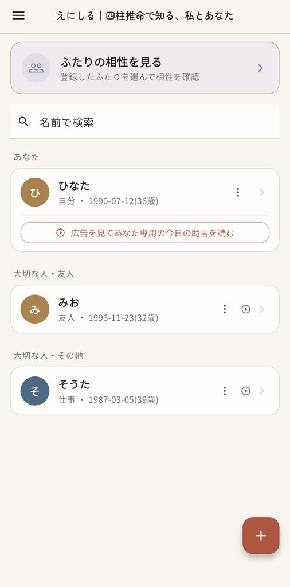
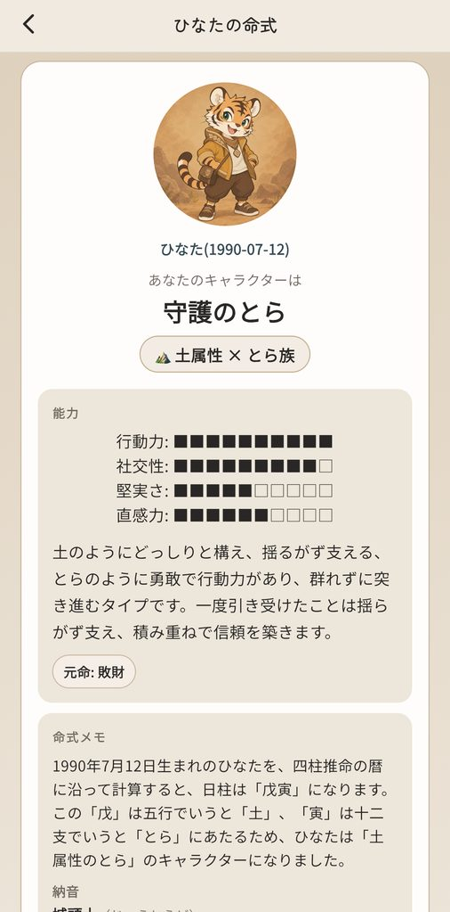
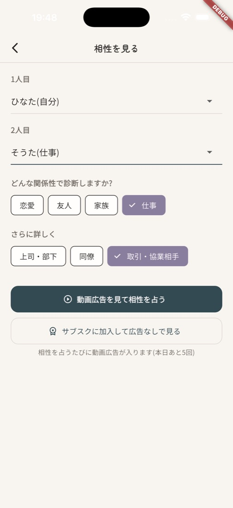
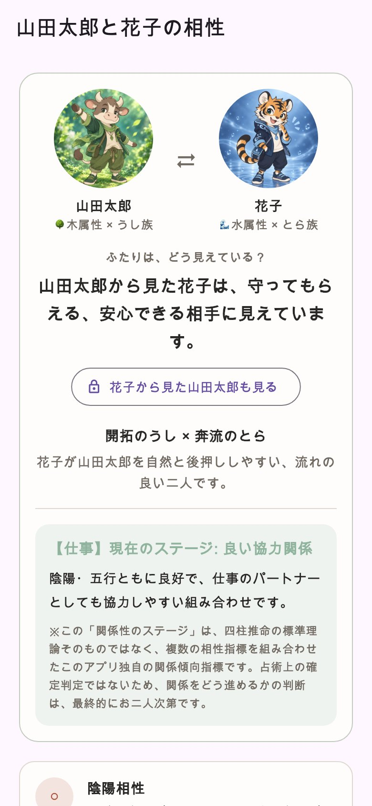

えにしる
準備中 ストアでの公開に向けて、準備を進めています。
四柱推命で知る、私とあなた。
生年月日から、自分の性格や運勢、大切な人との関係を読み解く、四柱推命の占いアプリです。「縁を知る」という意味を込めて、「えにしる」と名づけました。
相手が悪いわけでも、自分が悪いわけでもないのに、なぜか合わない。それでも、簡単には距離を置けない人もいます。えにしるでは、「恋愛」「友人」「家族」「仕事」の関係性に合わせて、ふたりの特徴と付き合い方のヒントを読み解きます。動画広告を見て、その日の「今日の助言」を読むこともできます。
仕事の人間関係も、見られる
相性を見るときは、まず関係性を選びます。「恋愛」「友人」「家族」「仕事」の4つです。
「仕事」を選ぶと、さらに「上司・部下」「同僚」「取引・協業相手」から選べます。同じふたりでも、関係性が変わると、読み解きと付き合い方のヒントも変わります。
上司との距離の取り方、部下への伝え方、同僚との役割分担など、簡単には距離を置けない仕事相手との関係も読み解けます。
相手から見た私も、わかる
同じふたりでも、見え方は一方向とは限りません。えにしるでは、「自分から相手」だけでなく、「相手から自分」がどう見えやすいかも読み解きます。
無料では、一方向の見え方を見られます。反対方向の見え方は、サブスクリプションで見られます。
画面に出る○や×は、人の優劣や、関係の正解・不正解を決めるものではありません。その関係で、どんな特徴が出やすいかを見るための目安です。
こんな画面です

登録した人の一覧。
生年月日から見る、自分のキャラクター。
どんな関係性で見るかを、選ぶ。
一方向の見え方は無料で。反対方向はサブスクリプションで。
開発中の画面です。表示している人物は、すべて架空のサンプルです。機能や画面は、変更になる場合があります。
使い方
- 自分の生年月日を登録する出生時刻と出生地がわかれば、あわせて登録します。名前はニックネームでも使えます。
- 命式を見る性格や強み、気をつけたい点、五行のバランス、これからの流れを読みます。
- 大切な人を足して、相性を見る相手を選び、関係性を選ぶと、その関係に合った読み解きが出ます。
無料でできること・サブスクリプションで見られること
命式の基本と、相性の一部は無料でご覧いただけます。未加入で新しい相性を占うときは、動画広告の視聴が必要です。同じふたり・同じ関係性の結果は、当日中は広告なしで見直せます。無料で新しく占える相性は、1日5回までです。サブスクリプションに加入すると、命式と相性の詳しい読み解きを、広告なしでご覧いただけます。
相性で見られること
- 無料で見られること選んだ関係性での短い総評、4つの相性の目安、「自分から見た相手」の見え方を確認できます。
- サブスクリプションで見られること次の6つの角度から、ふたりの関係を詳しく読み解きます。
- ふたりの相性の結論いくつもの要素を重ね、強みと気をつけたい点をまとめて読み解きます。
- お互いをどう見やすいか「自分から相手」だけでなく、「相手から自分」も。感じ方の違いと、関わり方のヒントを、両方向から見ます。
- この関係を活かす実践ガイド友人、家族、仕事など、選んだ関係性に合わせて、伝え方や距離の取り方を考えます。
- 日常・活動・将来の噛み合わせ普段のペースや役割分担、長く関わるときに出やすい違いを見ます。
- ふたりの運気カレンダー去年からこれから先まで、6年分の流れと、その時期に意識したいことを確認できます。
- 長期的な流れ現在の大運をもとに、ふたりの関係に出やすい長い流れを読みます。
内容は、選んだ関係性や役割(親と子、上司と部下、同僚、取引・協業相手など)に合わせて変わります。恋愛では、恋愛・結婚や暮らしについても読み解きます。詳しい鑑定の根拠も確認できます。
自分の命式も、現在の先まで詳しく
- 無料で見られることあなたらしさ、才能を活かしやすい場面、五行のバランス、現在の大運などを確認できます。恋愛・仕事・金運の流れは、今月を含む最初の区間まで見られます。
- 命式全体から見るあなた性格や得意な動き方を、ひとつの要素だけでなく、命式全体を重ねて読み解きます。
- 元命の詳しい性格と仕事元命が表す傾向と、力を活かしやすい仕事・業種を詳しく見ます。
- 恋愛面・仕事面の読み解き同じ性質が、恋愛と仕事ではどのように現れやすいかを、それぞれ読みます。
- 恋愛・仕事・金運の、この先の流れ今月だけでなく、これから数か月の切り替わりと、時期ごとの過ごし方の目安を確認できます。
- 去年・今年・来年の年運各年のテーマと、その年に意識したい具体的な行動を見ます。
- 現在より先の大運無料で見られる現在の大運に続けて、その先の長期的な流れや節目を確認できます。
- 出会えたらうれしい相性キャラ恋愛と友人、それぞれの視点で、相性のよい人柄の傾向をキャラクターで見ます。
- 詳しい鑑定の根拠身強身弱、季節を反映した五行バランス、用神など、読み解きのもとになった内容を確認できます。
表示される内容は、選んだ関係性や、出生時刻・性別などの入力状況によって、異なる場合があります。
月額480円(税込)を予定しています。サブスクリプションは毎月自動で更新されます。解約はApp StoreまたはGoogle Playの購読管理からいつでも行え、解約後も購入済みの期間が終わるまでは利用できます。実際の料金と条件は、購入前に各ストアの画面でご確認ください。
安心して使うために
入力した情報は、初期設定では、お使いの端末の中にだけ保存します。くわしくは、プライバシーポリシーをご覧ください。
占いの結果は、楽しみと参考のためのものです。自分や相手を決めつけるものではなく、人との違いを眺めて、付き合い方を考えるきっかけとしてお楽しみください。的中を保証するものではなく、大切な判断は、ご自身でなさってください。
ご案内
運営会社
えにしるは、株式会社SAWZANが企画・開発・運営しています。会社概要を見る
お問い合わせ
ご質問・ご要望は、こちらまでお寄せください。
support@sawzan.com